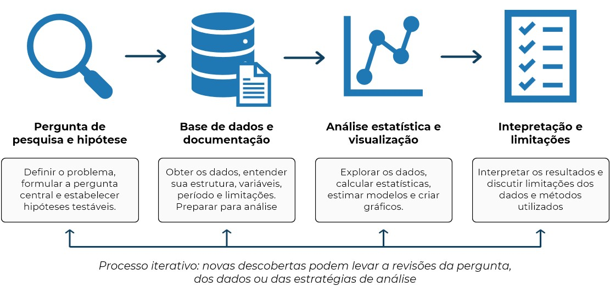
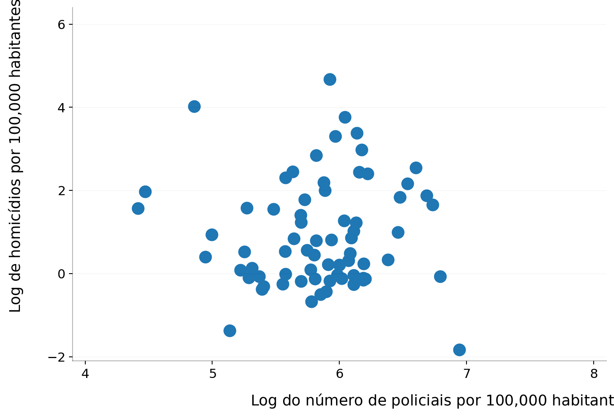
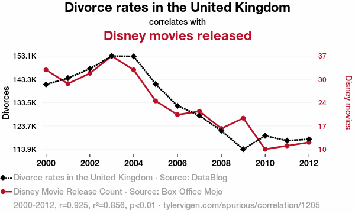

import os
import pathlib
import numpy as np
import pandas as pd
import statsmodels.api as sm
import matplotlib.pyplot as plt10 Análise empírica integrada
10.1 Introdução
Até este ponto do curso, introduzimos separadamente os principais componentes de um fluxo moderno de trabalho em ciência de dados aplicada à Economia: manipulação de objetos em Python, estruturas de controle, funções, programação numérica, manipulação de bases de dados e visualização de informações. No entanto, aplicações reais raramente aparecem de forma fragmentada. Em projetos empíricos concretos, todas essas ferramentas precisam ser combinadas de maneira organizada, coerente e replicável.
O objetivo deste capítulo é integrar os conteúdos estudados anteriormente em um projeto empírico completo, simulando as etapas normalmente encontradas em trabalhos acadêmicos, relatórios técnicos, pesquisas aplicadas e análises de dados no mercado de trabalho. A proposta não é apenas “rodar códigos”, mas desenvolver uma estrutura organizada de trabalho computacional capaz de produzir resultados confiáveis, interpretáveis e reproduzíveis.
Em Economia aplicada, grande parte do trabalho empírico consiste em transformar dados brutos em evidência quantitativa. Isso envolve decisões metodológicas, organização de arquivos, documentação adequada, limpeza de dados, análise estatística e comunicação de resultados. Pequenos erros em qualquer uma dessas etapas podem comprometer completamente uma análise. Por esse motivo, projetos empíricos exigem não apenas conhecimento estatístico, mas também boas práticas de programação e gestão computacional.
10.1.1 Pré-requisitos
Para implementar um projeto empírico no Python são vários os pacotes que serão utilizados. E essa é justamente uma das belezas de linguagens com uma comunidade tão ativa e produtiva como do Python: independente do tipo e complexidade do projeto, é alta a chance de pacotes específicos ao propósito do projeto em questão já terem sido desenvolvidos. No exemplo do capítulo, farei uso de pacotes básicos de gestão de sistema, bases de dados, análise estatística e visualização.
ospathlibnumpypandasstatsmodelsmatplotlib
10.2 A estrutura de um projeto empírico
Projetos empíricos são o principal instrumento utilizado por economistas para transformar dados em evidência quantitativa. Seja em pesquisas acadêmicas, relatórios técnicos, estudos de mercado ou avaliações de políticas públicas, o objetivo central é utilizar informações observáveis para responder a uma pergunta de interesse e produzir conclusões fundamentadas.
Embora os detalhes variem de acordo com o problema analisado, a disponibilidade de dados e os métodos empregados, a maioria dos projetos empíricos segue uma estrutura relativamente semelhante. Em geral, o trabalho começa com a definição de uma pergunta de pesquisa e de uma hipótese a ser investigada. Em seguida, é necessário obter, compreender e organizar os dados relevantes para a análise. Com a base preparada, realizam-se análises estatísticas e visualizações que permitam explorar padrões e relações entre as variáveis. Por fim, os resultados são interpretados à luz da pergunta original, reconhecendo as limitações dos dados e dos métodos utilizados.
Essa sequência de etapas não deve ser vista como um processo completamente linear. Frequentemente, descobertas feitas durante a análise exigem revisões na definição da hipótese ou motivam novas consultas à documentação da base de dados. Em outras palavras, projetos empíricos envolvem um processo iterativo de investigação, no qual perguntas, dados e resultados são continuamente confrontados.

Além das técnicas estatísticas propriamente ditas, um projeto empírico também exige organização e planejamento computacional. A forma como arquivos são armazenados, scripts são estruturados e resultados são documentados influencia diretamente a eficiência do trabalho e a capacidade de reproduzir a análise no futuro. Por esse motivo, boas práticas de programação e gestão de projetos são componentes fundamentais da pesquisa empírica moderna.
Nas próximas seções, examinaremos cada uma das etapas que compõem um projeto empírico típico, desde a formulação da pergunta de pesquisa até a interpretação dos resultados obtidos.
10.3 Etapas de desenvolvimento
10.3.1 Pergunta de pesquisa e hipótese
Todo projeto empírico começa com uma pergunta bem definida. Em aplicações reais, o objetivo da análise não é simplesmente utilizar uma base de dados, mas responder a uma questão específica com base em evidência quantitativa. A partir dessa pergunta, o pesquisador formula uma ou mais hipóteses, isto é, previsões sobre o comportamento das variáveis que serão confrontadas com os dados.
As hipóteses normalmente são fundamentadas em teorias, evidências anteriores, modelos ou mecanismos econômicos que sugerem uma possível relação entre variáveis observáveis. Elas servem como um guia inicial para a análise, ajudando a definir quais variáveis serão coletadas, quais relações serão investigadas e quais resultados esperamos encontrar.
Ao longo deste capítulo, utilizaremos como exemplo a relação entre policiamento e criminalidade. A teoria econômica do crime, desenvolvida a partir dos trabalhos seminais de Becker (1968) e Ehrlich (1973), sugere que um aumento do efetivo policial eleva a probabilidade de detecção e punição, aumentando o custo esperado da atividade criminosa e reduzindo os incentivos à prática de crimes. Com base nessa teoria, podemos formular hipóteses sobre como mudanças no policiamento ou na severidade das punições afetam as taxas de criminalidade.
| Pergunta | Hipótese |
|---|---|
| O número de policiais afeta o crime local? | Um aumento do efetivo policial está associado a menores taxas de criminalidade (Becker 1968; Ehrlich 1973) |
| Duração da pena afeta a decisão de envolvimento no crime? | Um tempo maior na prisão está associado a menores taxas de criminalidade (Becker 1968; Ehrlich 1973) |
Naturalmente, formular uma hipótese não significa que ela seja verdadeira. No exemplo do policiamento, embora a teoria sugira uma relação negativa entre polícia e crime, os dados podem revelar um padrão mais complexo. Regiões com maiores níveis de criminalidade frequentemente recebem mais recursos policiais, de modo que municípios com mais policiais também podem apresentar maiores taxas de crime. Determinar qual dessas forças predomina é justamente o objetivo da análise empírica.
Uma boa pergunta de pesquisa deve ser (i) clara, (ii) específica, (iii) empiricamente observável e (iv) compatível com os dados disponíveis. Essa etapa orienta todas as decisões posteriores do projeto, desde a escolha da base de dados até os métodos estatísticos utilizados. Em aplicações reais, uma parcela significativa do trabalho consiste em refinar a pergunta inicial e avaliar se ela pode ser adequadamente respondida com os dados existentes.
ImportanteAtenção
Uma hipótese não precisa estar correta. O objetivo da análise empírica não é confirmar crenças prévias, mas confrontá-las com os dados.
10.3.2 Base de dados e documentação
Após definir a pergunta de pesquisa, o próximo passo é obter e compreender os dados. Em aplicações empíricas, raramente trabalhamos com bases ``prontas para análise’’. Em geral, os dados precisam ser baixados, organizados, documentados e limpos antes que qualquer análise possa ser realizada. Nessa etapa, é fundamental responder perguntas como:
- Qual é a unidade de observação?
- O que representa cada linha da base?
- O que representa cada coluna?
- Existem valores faltantes?
- Como as variáveis foram construídas?
- Qual é o período temporal da base?
Por esse motivo, documentação é parte essencial de qualquer projeto empírico. Bases de dados normalmente acompanham notas metodológicas que descrevem as variáveis e o que representam, além dos questionários aplicados quando as bases derivam de pesquisas amostrais. Ignorar essa documentação é uma das principais fontes de erros em análises empíricas. Nesta etapa também organizamos a estrutura do projeto no computador. Um projeto desorganizado rapidamente se torna difícil de manter, especialmente quando múltiplos arquivos, scripts e bases de dados são utilizados simultaneamente.
No nosso exemplo de polícia trabalharemos com uma estrutura de 3 subdiretórios a partir de um diretório raiz: dados, scripts e resultados. O subdiretório de dados será subdividido em dois, um para armazenar os dados brutos e o outro para armazenar a base de dados já trabalhada e a partir da qual desenvolveremos a análise. Tudo isso pode ser feito através dos pacotes os, pathlib e suas funções.
# Diretório raiz do projeto
os.chdir('C:/Users/user/Desktop/EAE1106')
raiz = pathlib.Path('projeto_empirico')
# Estrutura de diretórios
diretorios = [raiz / 'dados',
raiz / 'dados' / 'original',
raiz / 'dados' / 'secundario',
raiz / 'scripts',
raiz / 'resultados']
# Criação dos diretórios
for dir in diretorios:
dir.mkdir(parents=True,exist_ok=True)
os.chdir('projeto_empirico')Os dados utilizados nesta aplicação foram obtidos junto à United Nations Office on Drugs and Crime (UNODC), órgão das Nações Unidas responsável pela compilação e divulgação de estatísticas internacionais sobre criminalidade, sistema de justiça criminal e drogas. As bases originais podem ser acessadas diretamente por meio do portal de dados da UNODC, disponível em UNODC Data Portal. Como o objetivo deste capítulo é ilustrar as etapas de um projeto empírico e não discutir os detalhes do tratamento dos dados, não analisaremos linha a linha o código utilizado para preparar a base. Todas as operações empregadas já foram apresentadas em capítulos anteriores. Em essência, o código a seguir realiza três tarefas: seleciona, dentre as diversas informações disponíveis na base original, os dados referentes às taxas de homicídio e ao efetivo policial; filtra as observações correspondentes ao ano de 2015; e, por fim, combina essas informações em uma única base de dados por meio de uma operação de merge. O resultado é um conjunto de dados que permite analisar conjuntamente a relação entre policiamento e criminalidade para os países disponíveis naquele ano.
## homicidios
df_hrate = pd.read_excel('dados/original/UNDOC CTS - Homicides.xlsx',sheet_name='data_cts_intentional_homicide')
df_hrate = df_hrate.loc[(df_hrate['Indicator']=='Victims of intentional homicide') &
(df_hrate['Dimension']=='Total') &
(df_hrate['Category']=='Total') &
(df_hrate['Sex']=='Total') &
(df_hrate['Age']=='Total') &
(df_hrate['Year']==2015) &
(df_hrate['Unit of measurement']=='Rate per 100,000 population')]
df_hrate = df_hrate[['Iso3_code','Country','Subregion','VALUE']].reset_index(drop=True)
df_hrate.columns = ['country_code','country_name','region','hrate']
## efetivo policial
df_pol = pd.read_excel('dados/original/UNDOC CTS - Police.xlsx',sheet_name='data_cts_access_and_functioning')
df_pol = df_pol.loc[(df_pol['Indicator']=='Criminal Justice Personnel') &
(df_pol['Dimension']=='by type of personnel') &
(df_pol['Category']=='Police personel') &
(df_pol['Sex']=='Total') &
(df_pol['Age']=='Total') &
(df_pol['Year']==2015) &
(df_pol['Unit of measurement']=='Rate per 100,000 population')]
df_pol = df_pol[['Iso3_code','VALUE']].reset_index(drop=True)
df_pol.columns = ['country_code','police']
df_polh = pd.merge(df_hrate, df_pol, on=['country_code'],how='inner')
df_polh = df_polh.loc[(df_polh['hrate']>0) & (df_polh['police']>0),:].reset_index(drop=True)
df_polh['police_log'] = np.log(df_polh['police'])
df_polh['hrate_log'] = np.log(df_polh['hrate'])
df_polh = df_polh.dropna(how='any',axis=0)
## base final
df_polh.to_csv('dados/secundario/UNDOC_HomicidioPolicia2015.csv', sep=',', encoding='utf8',index=False)Uma vez construída a base de dados que será utilizada na análise, o próximo passo é compreender sua estrutura. Antes de produzir gráficos, calcular estatísticas ou estimar modelos, é importante verificar quais variáveis estão disponíveis, quantas observações existem e se há problemas evidentes nos dados. Em projetos empíricos reais, essa etapa costuma ser iterativa: frequentemente descobrimos inconsistências ou limitações que nos levam a retornar ao código de limpeza e realizar ajustes adicionais.
Como visto anteriormente, uma das formas mais rápidas de obter uma visão geral da base é utilizar o método info(). Ele fornece informações sobre o número de observações, os nomes das variáveis, seus tipos de dados e a quantidade de valores não ausentes em cada coluna.
HomicidioPolicia2015 = pd.read_csv('dados/secundario/UNDOC_HomicidioPolicia2015.csv', sep=',', encoding='utf8')
HomicidioPolicia2015.info()<class 'pandas.core.frame.DataFrame'>
RangeIndex: 70 entries, 0 to 69
Data columns (total 7 columns):
# Column Non-Null Count Dtype
--- ------ -------------- -----
0 country_code 70 non-null object
1 country_name 70 non-null object
2 region 70 non-null object
3 hrate 70 non-null float64
4 police 70 non-null float64
5 police_log 70 non-null float64
6 hrate_log 70 non-null float64
dtypes: float64(4), object(3)
memory usage: 4.0+ KBNesse caso, observamos que a base contém 70 observações (países) e 5 variáveis, sem a presença de valores faltantes (missing values). É importante notar que esse resultado não surgiu naturalmente dos dados originais. Durante a etapa de preparação da base, utilizamos o método dropna() para remover observações com informações incompletas, eliminando potenciais problemas que poderiam comprometer as análises posteriores. Como consequência, passamos a trabalhar com uma amostra menor, composta apenas pelos países para os quais havia informações disponíveis tanto sobre homicídios quanto sobre efetivo policial em 2015.
Uma vez verificada a estrutura geral da base, podemos utilizar o método describe(), que produz um resumo estatístico das variáveis numéricas presentes no dataframe. Esse tipo de inspeção permite compreender melhor a distribuição dos dados e identificar possíveis valores extremos ou padrões que mereçam investigação adicional.
HomicidioPolicia2015.describe()| hrate | police | police_log | hrate_log | |
|---|---|---|---|---|
| count | 70.000000 | 70.000000 | 70.000000 | 70.000000 |
| mean | 7.080803 | 385.264197 | 5.839334 | 0.942007 |
| std | 15.507328 | 186.332107 | 0.498558 | 1.303586 |
| min | 0.160725 | 82.654955 | 4.414675 | -1.828058 |
| 25% | 0.930628 | 263.606393 | 5.574457 | -0.071899 |
| 50% | 1.730742 | 361.825049 | 5.891146 | 0.548448 |
| 75% | 6.206944 | 458.016614 | 6.126874 | 1.825303 |
| max | 107.638231 | 1034.750450 | 6.941916 | 4.678776 |
Essas estatísticas revelam uma considerável heterogeneidade entre os países da amostra. Enquanto a taxa de homicídios variou de \(0.2\) a aproximadamente \(107\) homicídios por \(100\) mil habitantes, o efetivo policial oscilou entre cerca de \(83\) e \(1000\) policiais por \(100\) mil habitantes. Além de fornecer uma primeira visão sobre a distribuição das variáveis, esse tipo de resumo estatístico também ajuda a identificar possíveis problemas nos dados, como valores extremos ou inconsistências. No nosso caso, os resultados sugerem que existem diferenças substanciais tanto nos níveis de criminalidade quanto na intensidade do policiamento entre os países analisados, uma característica que poderá ser explorada nas etapas seguintes da análise.
10.3.3 Análise estatística e visualização
Com os dados organizados, iniciamos a etapa de análise. Em projetos empíricos, a análise normalmente começa com estatísticas descritivas e visualizações. Antes de aplicar modelos estatísticos mais sofisticados, é importante compreender o comportamento geral das variáveis. Nessa etapa, investigamos questões como:
- distribuição dos dados;
- presença de outliers;
- valores inconsistentes;
- correlações;
- padrões temporais;
- diferenças entre grupos.
Visualizações possuem papel central nesse processo porque permitem identificar padrões que frequentemente não são evidentes apenas olhando tabelas numéricas. Além disso, análises estatísticas descritivas servem como uma primeira verificação da qualidade dos dados. Muitas inconsistências são descobertas justamente durante a exploração inicial da base.
No nosso caso da relação entre polícia e crime, uma primeira análise é a de correlação simples, a partir do cálculo do índice de correlação e da análise do gráfico de dispersão.
xticks=[4,5,6,7,8]
yticks=[-2,0,2,4,6]
xtickslabel=['$4$','$5$','$6$','$7$','$8$']
ytickslabel=['$-2$','$0$','$2$','$4$','$6$']
x = HomicidioPolicia2015['police_log']
y = HomicidioPolicia2015['hrate_log']
height = 6
fig, ax = plt.subplots(1, 1, figsize=(1.50*height, height))
ax.spines['top'].set_visible(False)
ax.spines['bottom'].set_visible(True)
ax.spines['right'].set_visible(False)
ax.spines['left'].set_visible(True)
ax.spines['bottom'].set_alpha(0.3)
ax.spines['left'].set_alpha(0.3)
ax.set_xlim(3.9, 8.1)
ax.set_ylim(-2.1,6.4)
ax.set_xticks(xticks)
ax.set_yticks(yticks)
ax.set_xticklabels(xtickslabel, fontsize=12, fontweight='light')
ax.set_yticklabels(ytickslabel, fontsize=12, fontweight='light')
ax.grid(visible=True, which='major',axis='y', ls='-',lw=0.5,c='k',alpha=0.05)
ax.scatter(x,y,alpha=1.0,color='#1f77b4', s=120)
ax.set_xlabel('Log do número de policiais por $100{,}000$ habitantes',fontsize=14, fontweight='light', labelpad=10, ha='center')
ax.set_ylabel('Log de homicídios por $100{,}000$ habitantes',fontsize=14, fontweight='light', labelpad=10, ha='center')
ax.xaxis.set_label_coords(0.69,-0.09)
ax.yaxis.set_label_coords(-0.09,0.58)
plt.savefig('resultados/policia_crime.pdf', bbox_inches='tight')
plt.show()
Embora o gráfico de dispersão seja uma ferramenta útil para uma inspeção inicial dos dados, ele nem sempre permite identificar claramente a existência ou a intensidade de uma relação entre duas variáveis. Em situações como esta, em que a nuvem de pontos não revela um padrão evidente, é comum recorrer a métodos estatísticos mais estruturados para quantificar a associação observada nos dados. Uma das abordagens mais utilizadas para esse fim é a regressão linear, que busca estimar como variações em uma variável estão associadas, em média, a variações em outra. No nosso caso, estimaremos uma regressão em que o logaritmo da taxa de homicídios é utilizado como variável dependente e o logaritmo do efetivo policial como variável explicativa. Para isso, utilizaremos o pacote statsmodels e a função OLS, sigla para Ordinary Least Squares (Mínimos Quadrados Ordinários), um dos métodos mais tradicionais para estimação de modelos lineares e que discutimos brevemente na aplicação do capítulo Capítulo 7.
HomicidioPolicia2015['constante'] = 1
X = HomicidioPolicia2015[['constante','police_log']]
result = sm.OLS(y,X).fit()
print(result.summary()) OLS Regression Results
==============================================================================
Dep. Variable: hrate_log R-squared: 0.000
Model: OLS Adj. R-squared: -0.015
Method: Least Squares F-statistic: 0.007910
Date: Tue, 02 Jun 2026 Prob (F-statistic): 0.929
Time: 13:24:31 Log-Likelihood: -117.38
No. Observations: 70 AIC: 238.8
Df Residuals: 68 BIC: 243.2
Df Model: 1
Covariance Type: nonrobust
==============================================================================
coef std err t P>|t| [0.025 0.975]
------------------------------------------------------------------------------
constante 0.7773 1.858 0.418 0.677 -2.930 4.485
police_log 0.0282 0.317 0.089 0.929 -0.604 0.661
==============================================================================
Omnibus: 5.790 Durbin-Watson: 2.051
Prob(Omnibus): 0.055 Jarque-Bera (JB): 5.371
Skew: 0.676 Prob(JB): 0.0682
Kurtosis: 3.118 Cond. No. 71.4
==============================================================================
Notes:
[1] Standard Errors assume that the covariance matrix of the errors is correctly specified.A saída da regressão apresenta diversas estatísticas sobre o modelo estimado, mas nosso foco principal está no coeficiente associado à variável police_log. Esse coeficiente mede a associação entre o efetivo policial e a taxa de homicídios na amostra analisada. Como ambas as variáveis foram transformadas em logaritmos, o coeficiente pode ser interpretado aproximadamente como uma elasticidade: ele indica a variação percentual esperada na taxa de homicídios associada a um aumento de \(1\%\) no efetivo policial. A tabela também informa o erro-padrão da estimativa, a estatística t e o p-valor, que ajudam a avaliar a precisão do coeficiente estimado. Embora essas estatísticas permitam resumir quantitativamente a relação observada nos dados, é importante lembrar que a regressão identifica apenas uma associação estatística entre as variáveis, não necessariamente uma relação causal entre policiamento e criminalidade.
DicaAlém do Statsmodels: uma alternativa moderna
Neste capítulo utilizamos o statsmodels, uma das bibliotecas mais tradicionais para análise estatística em Python. Ela oferece ferramentas para estimação de regressões lineares e diversos outros modelos estatísticos, sendo amplamente utilizada em pesquisa acadêmica.
Nos últimos anos, entretanto, surgiu uma nova geração de bibliotecas voltadas especificamente para economistas aplicados. Uma das mais promissoras é o PyFixest, inspirado no pacote fixest do R. Além de regressões lineares tradicionais, o PyFixest possui suporte para diversas técnicas amplamente utilizadas em pesquisas empíricas contemporâneas, incluindo modelos com efeitos fixos, estudos de evento e outros métodos de identificação causal, como Diferenças-em-Diferenças. Embora essas ferramentas estejam além do escopo deste curso, vale saber que o ecossistema Python continua evoluindo e hoje oferece alternativas cada vez mais sofisticadas para pesquisa aplicada em Economia.
10.3.4 Discussão dos resultados e limitações
Produzir resultados numéricos não é o objetivo final de um projeto empírico. Os resultados precisam ser interpretados cuidadosamente. Em aplicações reais, análises quantitativas quase sempre possuem limitações. Algumas fontes comuns incluem:
- dados incompletos;
- erros de medição;
- variáveis omitidas;
- tamanho reduzido da amostra;
- problemas de causalidade;
- viés de seleção.
Por esse motivo, resultados empíricos devem ser discutidos com cautela. Uma regressão estatisticamente significativa não implica automaticamente uma relação causal.
ImportanteCorrelação não implica causalidade
Uma simples relação entre duas séries de dados não quer dizer necessariamente muita coisa. Amálise empírica vai muito além de uma simples análise de regressão ou de um gráfico de dispersão. Ou você acha que existe uma relação de causa e efeito entre a taxa anual de divórcios no Reino Unido e o número de novos filmes lançados pela Disney?

No nosso exemplo da relação entre atividade criminosa e policiamento, são várias as variáveis não observáveis e outros problemas de seleção nos dados que podem confundir bla bla bla. Mesmo que municípios com mais policiais apresentem mais crimes, isso não significa que a presença policial aumente a criminalidade. É possível que municípios mais violentos recebam mais policiais justamente porque possuem mais crimes.
Além disso, diferentes escolhas metodológicas podem produzir resultados diferentes. Pequenas alterações em filtros, variáveis ou amostras podem modificar substancialmente as conclusões de uma análise. Um bom projeto empírico reconhece explicitamente essas limitações em vez de ignorá-las. Em Economia aplicada, a credibilidade de uma análise depende não apenas da sofisticação técnica, mas também da transparência metodológica.
10.4 Boas práticas
As etapas apresentadas até aqui descrevem o fluxo básico de um projeto empírico, mas a qualidade de uma análise depende também da forma como os dados, os códigos e os resultados são organizados. Em projetos maiores, a ausência de boas práticas pode dificultar a identificação de erros, a atualização dos resultados e até mesmo a reprodução da análise pelo próprio pesquisador alguns meses depois. Por esse motivo, pesquisadores e cientistas de dados costumam seguir um conjunto de princípios que tornam o trabalho mais organizado, transparente e replicável. A seguir, apresentamos algumas recomendações simples que podem ser adotadas desde os primeiros projetos.
Nunca altere diretamente os dados brutos.
Os arquivos originais devem permanecer intactos. Toda limpeza ou transformação deve gerar novos arquivos em uma pasta separada, como
dados/secundarios/. Isso permite reproduzir integralmente o processo de construção da base final.Utilize nomes claros e padronizados para arquivos, scripts e variáveis. Quando não for possível, documente.
Organize o projeto em diretórios.
Misturar scripts, figuras, tabelas e bases de dados em uma única pasta rapidamente torna o projeto difícil de navegar. Estruturas organizadas reduzem erros e facilitam manutenção futura.
Documente o projeto.
Comentários e documentação são essenciais. Um código escrito hoje pode se tornar incompreensível algumas semanas depois, inclusive para o próprio autor. Explique o objetivo do script, origem dos dados, significado e forma de construção de variáveis importantes, etapas principais da limpeza e da análise.
Evite caminhos absolutos em seus scripts.
Evite utilizar em seus scripts caminhos como
C:/Users/user/Desktop/EAE1106/projeto_empirico/dados/original/base.csv, que funcionam apenas em computadores específicos. Prefira caminhos relativos comodados/original/base.csvque funcionam a partir do diretório baseprojeto_empirico, isso melhora portabilidade e replicabilidade.Mantenha scripts separados por função.
Projetos maiores devem separar tarefas em scripts diferentes, i.e., um script para limpeza de dados e outro para análise estatística, por exemplo. Isso reduz complexidade e facilita depuração.
Salve figuras e tabelas automaticamente.
Evite copiar manualmente resultados para relatórios. Sempre que possível, exporte gráficos e tabelas diretamente pelos scripts. Isso reduz erros e garante consistência entre análise e relatório final.
Pense no projeto como um sistema completo.
Projetos empíricos não consistem apenas em “rodar um código”. Eles envolvem:
- organização e documentação;
- tratamento de dados;
- análise, interpretação e comunicação de resultados.
Uma boa gestão computacional reduz erros, economiza tempo e aumenta a confiabilidade da análise.
Nenhuma dessas práticas é obrigatória, e diferentes pesquisadores podem adotar estruturas de trabalho distintas. Ainda assim, todas compartilham o mesmo objetivo: tornar a análise mais fácil de entender, revisar e reproduzir. À medida que os projetos se tornam maiores e mais complexos, investir tempo em organização e replicabilidade deixa de ser apenas uma questão de conveniência e passa a ser um componente fundamental da qualidade da pesquisa empírica.
10.5 Conclusão
Neste capítulo, reunimos os principais elementos de um projeto empírico em um único fluxo de trabalho. Partindo de uma pergunta de pesquisa e de uma hipótese, mostramos como obter e documentar dados, construir uma base de análise, explorar estatísticas descritivas, produzir visualizações e estimar uma regressão simples. Embora a aplicação tenha utilizado dados sobre policiamento e criminalidade, as etapas apresentadas são comuns à maioria dos trabalhos empíricos em Economia.
Mais importante do que os resultados obtidos foi compreender a lógica que organiza uma investigação empírica. Projetos bem estruturados dependem não apenas de técnicas estatísticas, mas também de boas práticas de organização, documentação e replicabilidade. À medida que os problemas analisados se tornam mais complexos, essas práticas tornam-se cada vez mais importantes para garantir análises transparentes, confiáveis e passíveis de reprodução.
10.6 Exercícios
X
X